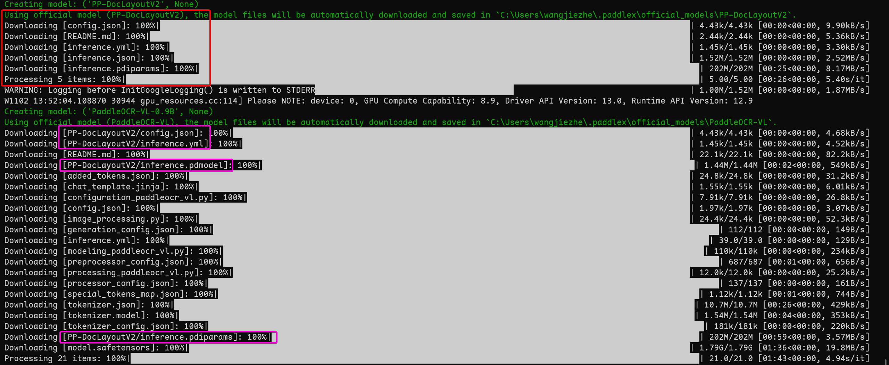
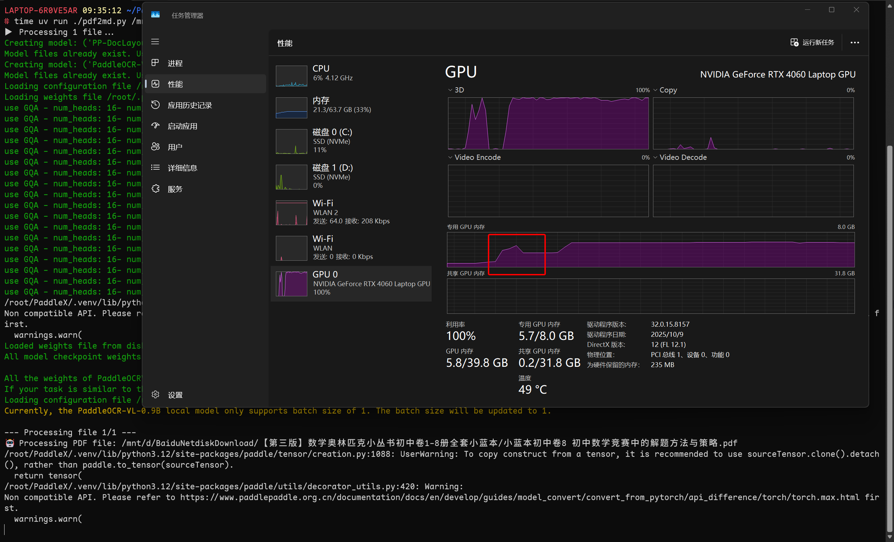
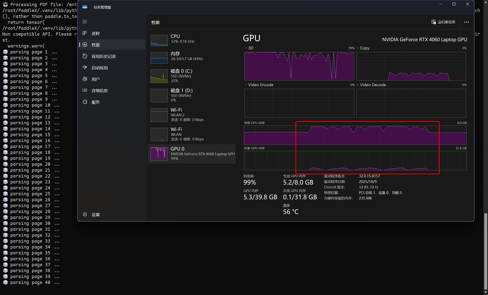
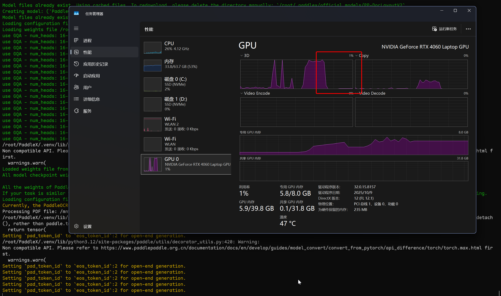
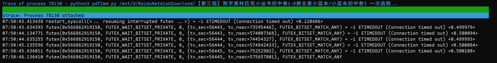

尝试使用PaddleOCR-VL
强烈建议使用vLLM进行部署，这样不会遇到本文中提到的各种显存问题，部署方法可以参考后面这篇文章。
根据官方的说明：
推理过程中有时出现 OOM 问题
默认的 PaddlePaddle 动态图推理方式显存占用波动较大，处理复杂图像时峰值显存使用量可能较高。如需获得更稳定的显存占用表现，建议使用 vLLM、SGLang 等专用推理加速框架进行部署。
实际表现确实如此。原始的部署方式在处理一些尺寸较大的图片（即使图片本身比较小）时，即使有40G的显存也可能会报显存不足的错误，参考这个issue。我在使用自己的图片是也复现过这个问题。
另外，使用vLLM框架部署之后就没有再遇到过本文提到的各种显存的问题。
之前和DeepSeek-OCR进行对比，使用的是PaddleOCR，而不是当时的SOTA模型PaddleOCR-VL，原因也很可笑，就是按照官方文档安装之后居然无法运行，于是只能放弃了。
好在前几天释出的3.3.6版本的PaddleX解决了这个问题，本地的PaddleOCR-VL终于能正常运行了。
1. 安装PaddleOCR-VL
1.1. 在WSL上进行部署
之前已经安装了PaddleOCR：
1 | export UV_DEFAULT_INDEX="https://pypi.tuna.tsinghua.edu.cn/simple" |
如果要使用PaddleOCR-VL产线，按照官方说明，必须安装特殊版本的 safetensors：
1 | uv pip install https://paddle-whl.bj.bcebos.com/nightly/cu126/safetensors/safetensors-0.6.2.dev0-cp38-abi3-linux_x86_64.whl |
另外务必确认PaddleX的版本：
1 | uv pip install paddlex==3.3.6 paddleocr==3.3.1 |
或者直接升级也可以：
1 | uv pip install -U paddlex paddleocr |
之后就可以使用PaddleOCR-VL了。具体的代码参考官方文档。
另外吐槽一句，PaddleOCR的3.3.1版本的更新日志里明明白白地写了「修复了PP-StructureV3和PaddleOCR-VL的文档图像预处理开关不生效的问题」，结果根本没有解决这个问题。
明明默认的PP-StructureV3.yaml里面写了 use_doc_preprocessor: False，但还是会调用对应的「文档图像预处理产线」。
之前发现这个问题，是因为我在识别一张课程表的时候，居然连标题都识别错了，而且错的特别离谱。后来发现是因为「文档图像预处理产线」调用了「文本图像矫正模块」，导致这个图片被裁掉了一圈，标题也被裁掉了一半，难怪识别不对。
因此，如果图片或者PDF文件非常规整的话，创建产线的时候务必要使用 use_doc_unwarping=False 关掉「文本图像矫正模块」。或者直接修改产线配置文件也可以。
我在官方示例的基础上稍微做了一下修改，除了保存markdown文件及图片外，还把所有生成的可视化图像转换成PDF保存。其中 pil_to_pdf_img2pdf 函数来自run_dpsk_ocr_pdf.py。
1 | from pathlib import Path |
1.2. 在Windows上部署
今天又看了一下最新文档，对应的Windows版本的safetensors预编译包也有了，因此理论上在Windows上也能正常运行了。
1 | $env:UV_LINK_MODE="symlink" |
尝试运行
1 | uv run paddleocr doc_parser -i https://paddle-model-ecology.bj.bcebos.com/paddlex/imgs/demo_image/paddleocr_vl_demo.png --save_path output |
然后就华丽地报错了：
1 | RuntimeError: Exception from the 'vlm' worker: (NotFound) The kernel `fused_rms_norm_ext` is not registered. |
好在可以解决，手动进行hacking，把 self.fuse_rms_norm = True 改为 False：
1 | sed -i "s/self\.fuse_rms_norm = True/self.fuse_rms_norm = False/g" .\.venv\Lib\site-packages\paddlex\inference\models\doc_vlm\modeling\paddleocr_vl\_config.py |
这时终于可以正常运行了。
这里再吐槽一下，PaddleOCR-VL产线需要用的PP-DocLayoutV2模块，但是不知道为什么，居然需要下载两次放到不同的目录：

1.3. 在Kaggle上部署
如果要在Kaggle上部署的话，GPU务必选择 GPU T4 x2，不要选择 GPU P100。
安装过程：
1 | ! pip install paddlepaddle-gpu==3.2.0 -i https://www.paddlepaddle.org.cn/packages/stable/cu126/ |
然后就可以使用了。
需要注意的是，如果要使用双卡进行推理的话，直接指定 device="gpu:0,1" 是不行的，需要使用多进程并行推理：
1 | import sys |
最后再吐槽一下，在Kaggle上部署PaddleOCR-VL的最大障碍其实是paddlepaddle的下载速度。安装一次paddlepaddle经常就得花半小时，有时甚至下载速度甚至会降到几百K，都快赶上百度网盘了。
2. 产线文件
实际使用的产线文件在PaddleX的configs/pipelines目录下。可以把它链接到本目录下，方便后续查看和修改：
1 | ln -s .venv/lib/python3.12/site-packages/paddlex/configs/pipelines |
常用的一些PaddleOCR产线与PaddleX产线注册名的对应关系如下：
| PaddleOCR 产线 | PaddleX 产线注册名 |
|---|---|
| 通用 OCR | OCR |
| PP-StructureV3 | PP-StructureV3 |
| PP-ChatOCRv4 | PP-ChatOCRv4-doc |
| 通用表格识别 v2 | table_recognition_v2 |
| 公式识别 | formula_recognition |
| 印章文本识别 | seal_recognition |
| 文档图像预处理 | doc_preprocessor |
| 文档理解 | doc_understanding |
| PP-DocTranslation | PP-DocTranslation |
| PaddleOCR-VL | PaddleOCR-VL |
可以在对应的yaml文件中看到具体的产线配置。
3. 遇到的问题
之前在使用PP-StructureV3的时候，一切都很正常。但是使用PaddleOCR-VL就出现了各种各样的问题。
3.1. 显存不释放
在本地运行PaddleOCR-VL的时候，经常出现占用显存不释放，然后还请求新的显存的情况。由于我是在笔记本电脑上运行，显存用完之后会直接借用内存。这不会报错，但是会大大影响推理速度。
目前的解决方法有两个：
其一，在运行 pipeline.predict_iter 之后、访问其结果之前，手动进行垃圾回收和显存释放：
1 | import gc |
此时在任务管理器里会观察到占用的显存会有一次明显下降：

但是使用PP-StructureV3的话，添加这个命令就不会观察到显存占用下降。
其二，设置环境变量：
1 | import os |
需要注意的是，这个命令必须在paddle库导入之前设置才能生效。
奇怪的是，在这个设置下，运行PP-StructureV3产线直接报错，说显存不足。默认的 auto_growth 策略反而能够正常运行。
双管齐下，PaddleOCR-VL在推理PDF时占用的显存大概在5G左右，只是偶尔会波动一下需要借用内存：

但是很快就回落了。这样对性能影响不大，还可以接受。
3.2. 程序卡死
在使用PaddleOCR-VL的时候，好几次遇到程序卡死的情况：

可以看到模型已经被加载，而且PDF也已经载入了，但是没有进行推理。使用strace看一下进程：

这是出现死锁了？
只能强行杀掉了。
不过，今天在删掉模型缓存之后再次运行了几次都没再遇到这种情况。不知道和缓存有没有关系。
3.3. 使用生成器
关于显存占用，还有一点需要注意。如果是使用
1 | from paddleocr import PaddleOCRVL |
创建产线，建议使用
1 | output = pipeline.predict_iter(input=input_file) |
进行推理。这样返回一个生成器，之后循环处理的时候再实际进行推理。
使用 PPStructureV3 创建产线时的情况和上面是一样的
但如果是使用
1 | from paddlex import create_pipeline |
创建产线，可以直接使用
1 | output = pipeline.predict(input=input_file) |
来进行推理。这时直接返回的就是一个生成器。
鬼知道为什么都是predict，返回值的居然不一样。。。